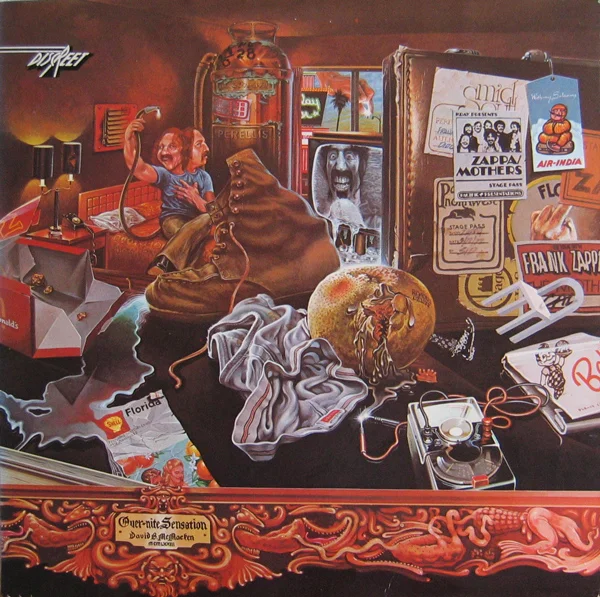
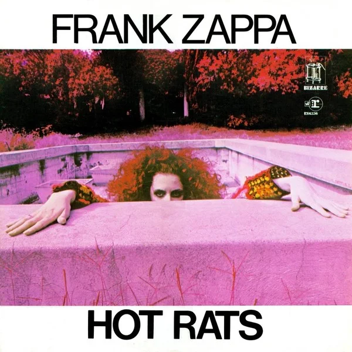
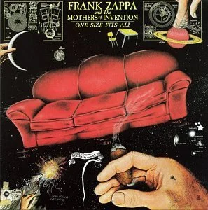
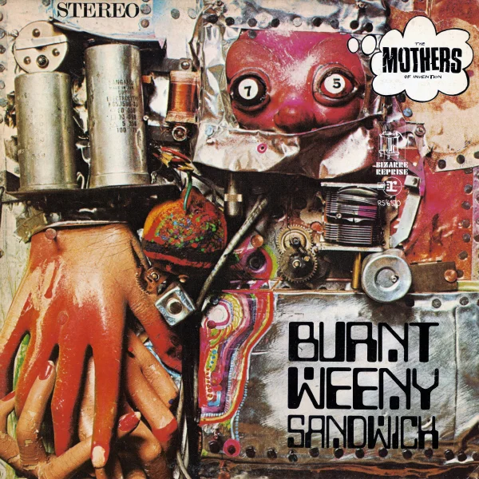
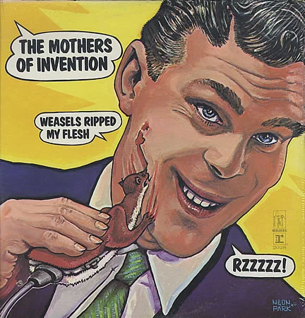
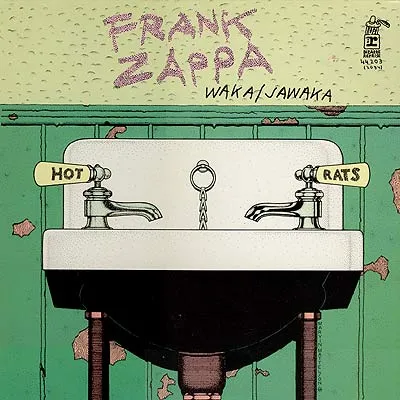
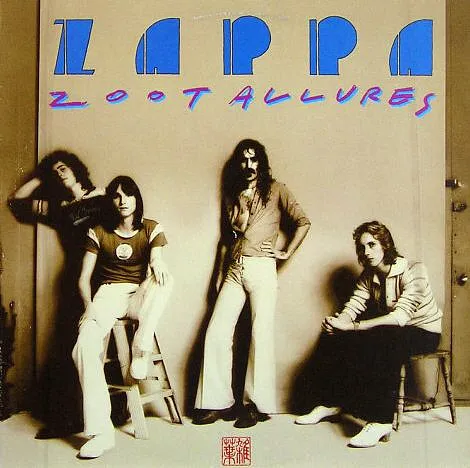

Frank Zappa
MAIS UMA PÁGINA TRIBUTO
BIO
.jpg)
Frank Vincent Zappa [1] (Baltimore, 21 de dezembro de 1940 — Los Angeles, 4 de dezembro de
1993) foi um compositor, cantor, guitarrista, multi-instrumentista, produtor e realizador americano.
Considerado um dos maiores músicos e compositores do séc. XX.
Com uma carreira de mais de trinta anos, a sua obra musical estendeu-se pelo rock, fusion, jazz, música
eletrônica, música concreta e música clássica.
Zappa compôs e produziu quase todos os seus 60 álbuns. Os Mothers of Invention, banda que o acompanhou em
grande
parte da carreira era apenas o conjunto de músicos que o acompanhava nos seus concertos e gravações não
tendo por
isso uma estrutura estática, mudando constantemente os seus elementos.
Apesar de sempre se ter considerado como um músico averso e contrário à indústria musical, principalmente
contra a
sua máquina comercial, esta não pode deixar de reconhecer a sua genialidade.
Entre os inúmeros prêmios que ganhou em vida, e que continua ganhando postumamente, destacam-se dois prêmio
Grammy
(1985 e 1988),[2] e um Grammy Lifetime Achievement Award, em 1997.[3] Foi considerado o 22º Melhor
Guitarrista de
todos os tempos pela Revista Rolling Stone,[4]
um dos 100 Maiores Artistas de todos os Tempos (posição 71) pela mesma revista,[5] e um dos 100 Maiores
Artistas/Bandas de Hard Rock de Todos os Tempos (posição 36) pelo canal VH1.[6] É, ainda, a única pessoa a
ter
sido incluída nos Halls da Fama tanto do Jazz quanto do Rock and Roll.[7]
Na adolescência, adquiriu um gosto por compositores de música de vanguarda baseada na percussão, como Edgard
Varèse, e também pelo rhythm and blues dos anos 1950. Zappa começou a escrever música clássica no ensino
médio, à
mesma época em que tocava bateria em bandas de rhythm and blues - ele fez a troca para a guitarra
posteriormente.
Compositor e performista da sua própria música, com influências diversas, o seu trabalho é praticamente
impossível
de ser categorizado. O seu álbum de estreia com o Mothers of Invention, Freak Out!, combinava canções no
formato
convencional do rock and roll com improvisações coletivas e colagens de som realizadas em estúdio.
Os seus últimos álbuns também continham essa abordagem eclética e experimental, independentemente de o
formato
fundamental ser rock, jazz ou clássica. Ele escreveu as letras de todas as suas canções, as quais -
frequentemente
humorística - refletiam a sua visão iconoclástica dos processos sociais e políticos, estruturas e movimentos
estabelecidos.
Era um grande crítico do método de educação e das religiões, e um forte defensor da liberdade de expressão,
da
autodidática e da abolição da censura.
Na tese de mestrado "O estranho perfeito: a música orquestral de Franz Zappa", o pesquisador Martin Herraiz
divide
a carreira de Frank Zappa em 4 fases: A primeira (1965 - 1971), onde se inclui todo o trabalho com suas
bandas
Mothers of Invention/Mothers, e na qual Zappa apresenta ao mercado fonográfico todo seu pioneirismo
(primeiro álbum duplo da história da música, criação do jazz-rock, novas técnicas de gravação, etc.). A
segunda
(1972 - 1978), caracterizada pela exploração do virtuosismo instrumental e de canções expressamente
humorísticas.
A terceira (1979 - 1988), a mais produtiva de Zappa, onde estão, além de alguns de seus mais importantes
projetos
orquestrais, o aperfeiçoamento da xenocronia, o engajamento na política
(especialmente no ativismo anti-censura), álbuns focados em seus solos de guitarra e mais alguns na
utilização do
Synclavier DMS. E a quarta e última fase (1989 - 1993), já após a descoberta do câncer de próstata em fase
avançada, na qual ele se empenha em finalizar a maior quantidade projetos possíveis (HERRAIZ[8], 2010, págs
23 a
28).
Frank Zappa faleceu, em decorrência de um câncer de próstata, em 4 de dezembro de 1993, um sábado, 17 dias
antes
de completar 53 anos. Era casado com Adelaide Gail Sloatman, com quem teve quatro filhos: Moon Unit, Dweezil
Zappa, Ahmet Emuukha Rodan e Diva Thin Muffin Pigeen.
Fonte: Wikipedia
DISCOGRAFIA SELECIONADA
Apostrophe (1974)
Over Nite Sensation (1973)
Hot Rats (1969)
One Size Fits All (1975)
Burnt Weeny Sandwich (1970)
Weasels Ripped My Flesh (1970)
Waka/Jawaka (1972)
Zoot Allures (1976)
Ao Vivo
Entrevistas
Entrvistas escritas:
- Frank Zappa: A inteligência, perspicácia, e humor do então jovem músico
- Zappa - The Great Satirist
- That Playboy Interview
- The Rolling Stone Interview: Frank Zappa